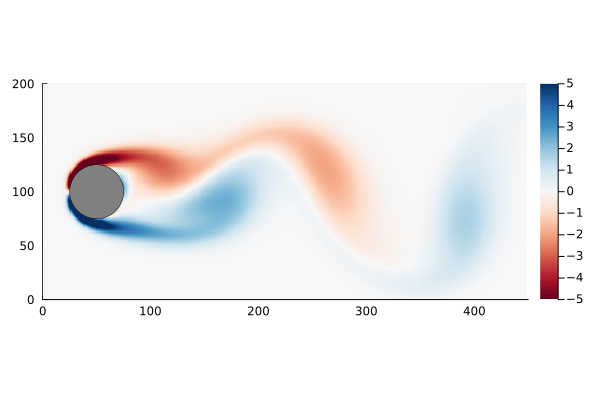
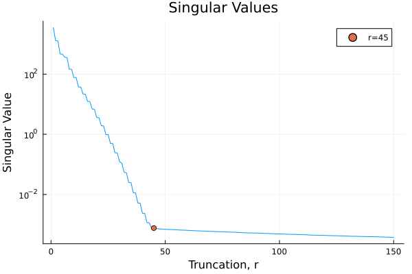
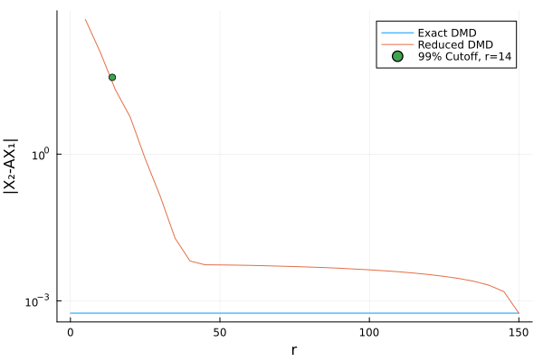
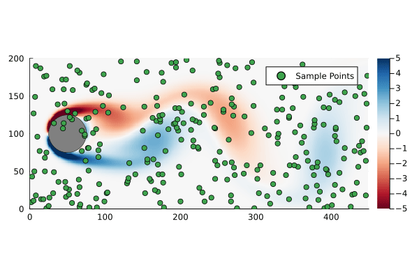
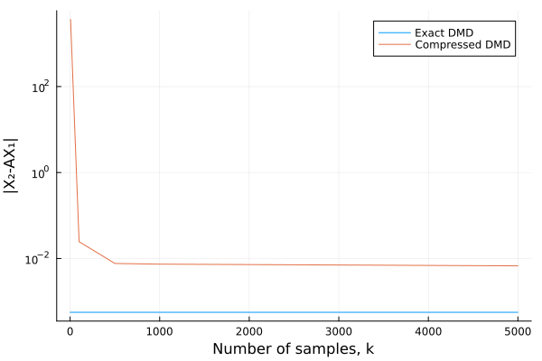

Dynamic mode decomposition of fluid flow problems.
julia
dynamical systems
Author
Allan Farrell
Published
December 18, 2022
Recently I’ve been playing around with Dynamic Mode Decomposition (DMD) and this notebook compiles my notes and julia code in one place for later reference.
Very generally DMD is an approach to system identification problems that is well suited for high dimensional data and systems with coherent spatio-temporal structures. In particular DMD finds the “best fit” linear approximation to the dynamical system, i.e. it finds the matrix A such that
\[ \mathbf{\dot{x} } = \mathbf{A x} \]
Where x is the high dimensional state vector for the system. One key strength of DMD is that it allows one to calculate x(t) without explicitly calculating A. This may not seem like a particularly useful property on its face unless one notes that the matrix A is n×n and, for systems with a very large n (i.e. very high dimensionality) that can be huge. Context for huge is also important: a matrix that fits easily in memory on my laptop may be infeasibly huge for an embedded system. For control applications, such as MPC, DMD may be a good method for generating approximations that are both good and space efficient.
Example: Flow Past a Cylinder
As a motivating example, I am going to use the flow past a cylinder dataset from Data-Driven Science and Engineering, specifically the matlab dataset. This dataset is the simulated vorticity for fluid flow past a cylinder. The vector x in this case is the vorticity at every point in the discretized flow field at a particular time; a two dimensional array of 89,351 pixels reshaped into a column vector. The data is a sequence of equally spaced snapshots of the flow field, and ultimately we wish to generate a linear system that best approximates this.
The MAT package allows us to import data from matlab data files directly into julia
usingMATfile =matopen("data/CYLINDER_ALL.mat")# import the data setdata =read(file, "VORTALL");# the orinal dimensions of each snapshotnx =Int(read(file, "nx"))ny =Int(read(file, "ny"))# the final dimensions of the data matrixn, m =size(data)
(89351, 151)
The data set, data, has already been processed into the form we need: each column represents a “frame” of the animation. We can walk through the matrix, taking each column and re-shaping it back into a 2D array, and recover the original flow as a movie.

Figure 1: Original data, vorticity of flow past a cylinder.
The data set has the property that the number of data points at each time step, n, is much greater than the number of time steps, m. In fact n is large enough that the n×n matrix A might be unwieldy to store: If we assume it is a dense matrix of 64-bit floats, 8 bytes each, we would need ~64GB of memory just to store it.
size_A_naive = n*n*8
63868809608
Exact DMD
DMD provides us a method to both find a best fit approximation for A while also being more space (and computation) efficient. To get there we first need to define what a best fit means.
Best Fit Matrix
Consider the general linear system Y = AX, where Y is a n × m matrix of outputs, X is a n × m matrix of inputs and A is an n × n linear transformation matrix. We say that the best fit matrix A is the matrix that minimizes
1 I think this can be shown fairly easily by starting with the definition of the Frobenius norm \(\| \mathbf{ A X } - \mathbf{Y} \|_{F}^{2} = \mathrm{Tr}\left( \left(\mathbf{ A X } - \mathbf{Y}\right)\left(\mathbf{ A X } - \mathbf{Y} \right)^{T} \right)\) and finding the matrix A that minimizes that using standard matrix calculus, and some properties of the pseudoinverse.
Singular Value Decomposition
The conventional way of calculating the Moore-Penrose pseudoinverse is to use the Singular Value Decomposition: for a matrix X with SVD \(\mathbf{X}=\mathbf{U}\mathbf{\Sigma}\mathbf{V}^{*}\), the pseudoinverse is \(\mathbf{X}^{\dagger} = \mathbf{V} \mathbf{\Sigma}^{-1} \mathbf{U}^{*}\). Returning to the best fit matrix A we find
Which then allows us to reconstruct the matrix A on demand while only needing to store the matrices à and U, by the following \[ \mathbf{A} = \mathbf{U} \tilde{ \mathbf{A} } \mathbf{U}^{*} \]
This is useful when n > > m as U is n×m and à is m×m. For this example this has reduced the memory requirement to ~108MB, a >99.8% reduction
size_A_exact = (n*m + m*m)*8
108118416
size_A_exact/size_A_naive
0.0016928202774340957
Returning to the original problem, we have a sequence of discrete snapshots arranged in a matrix such that each column, k, is the vector xk. Our aim, then, is to find the best fit matrix A for the linear system
\[ \mathbf{x}_{k+1} = \mathbf{A} \mathbf{x}_k \]
for all xk in our data set. Or in other words, to find the best fit matrix A for the system
\[ \mathbf{X}_{2} = \mathbf{A} \mathbf{X}_{1} \]
where X1 is the matrix of all of the vectors xk and X2 is the matrix of the corresponding xk+1’s.
Though, using DMD, we will instead calculate à and U, leaving us with
We can then calculate the predicted xk+1’s, without ever having to actually compute (or store) A
X̂₂_exact = (U*(Ã*(U'*X₁)));
As before, we can step through the matrix, extract each frame of the 2D flow field, and animate them, giving us a general sense of how well this worked
Figure 2: Original flow field (top) and reconstructed flow field (bottom).
Dynamic Modes
Of course this only solves the problem in the discrete case (for control applications that may be all you need). Consider again the system \(\mathbf{\dot{x} } = \mathbf{A x}\), the solution to this differential equation is
\[ \mathbf{x}\left( t \right) = e^{\mathbf{A}t} \mathbf{x}_{0} \]
where x0 is the initial conditions. If the matrix A has eigendecompositionΦΛΦ-1 then this can be written as
\[ \mathbf{x}\left( t \right) = \mathbf{\Phi} e^{\mathbf{\Lambda}t} \mathbf{\Phi}^{-1} \mathbf{x}_{0} \]
So it would be very convenient if we could get those eigenvalues and eigenvectors, preferably without having to actually compute A.
Recall, by definition, the projection matrix à is unitarily similar to A, which means the eigenvalues are identical. The eigenvectors of A can also be recovered from properties of Ã: Suppose à has the eigendecomposition WΛW-1
# calculate eigenvectors and eigenvalues# of projection ÃΛ, W =eigen(Ã)# reconstruct eigenvectors of AΦ = YVΣ⁻¹*W;
Whether or not the ultimate goal is to generate the continuous system, the eigenvectors and eigenvalues are useful to examine as they represent the dynamic modes of the system.
Figure 3: The first and tenth dymanic mode of the system.
I’ve played somewhat fast and loose with variables: the A for the discrete system is not the sameA as the continuous system. Specifically the eigenvalues of the continuous system, ω are related to the eigenvalues of the discrete system, λ by the following
where Δt is the time step. The eigenvectors are the same, though. So we can generate a function x(t) pretty easily:
# calculate the eigenvalues for # the continuous systemΔt =1Ω =Diagonal(log.(Λ)./Δt)# precomputing thisΦ⁻¹x₀ = Φ\X₁[:,1]# continuous systemx̂(t) =real( Φ*exp(Ω .* t)*Φ⁻¹x₀ )
Figure 4: Original flow field (top) and reconstructed flow field (bottom), using the continuous time vector function.
Refactoring
Through taking the SVD, the eigenvalue decomposition, and projections, DMD involves generating a whole bunch of matrices, which can be really unwieldy to manage without some structure. The low hanging fruit for refactoring is to introduce a struct to store those matrices.
struct DMD r::Integer # Dimension U::Matrix # Upper Singular Vectors Ã::Matrix # Projection of A Λ::Diagonal # Eigenvalues of A Φ::Matrix # Eigenvectors of Aend
Then we can introduce a method that takes an input matrix X and output matrix Y and returns the corresponding DMD object. We can take advantage of multiple dispatch to to add further methods, such as for the case where we have a single data matrix X and wish to calculate the DMD on the “future” and “past” matrices.
functionDMD(Y::Matrix, X::Matrix)# dimension r =rank(X)# Full SVD U, Σ, V =svd(X) Σ =Diagonal(Σ)# projection YVΣ⁻¹ = Y*V*Σ^-1 à = U'*YVΣ⁻¹# calculate eigenvectors and eigenvalues# of projection à Λ, W =eigen(Ã) Λ =Diagonal(Λ)# reconstruct eigenvectors of A Φ = YVΣ⁻¹*WreturnDMD(r,U,Ã,Λ,Φ)endfunctionDMD(X::Matrix) X₁ = X[:, 1:end-1] X₂ = X[:, 2:end]returnDMD(X₂, X₁)end
We can check that this is doing what it is supposed to be doing by comparing with what we have already done
d =DMD(data)# This produces the same result as befored.Φ == Φ && d.Λ ==Diagonal(Λ)
true
If you were to build this into a larger project, it would be worthwhile to define some actual unit tests to validate that the DMD is working properly.
Discrete System
Since we have a DMD type to work with, we can also refactor how discrete systems are generated. In this case I have defined a struct for the discrete system, and then added a method such that any discrete system acts as a callable xk+1=f(xk)
ds =DiscreteSys(d)# This produces the same result as beforeX̂₂_exact ==ds(X₁)
true
Continuous System
Similarly we can refactor the generation of continuous systems, first by defining a struct for the continuous system, then by adding a method xt=f(t). This requires a little more information: we need to keep track of the initial state of the system x0 as well as the step size Δt
cs =ContinuousSys(d, X₁[:,1]);# This produces the same result as beforex̂(150) ==cs(150)
true
Large Systems
I have been using the default tools in julia, which work well for small matrices. If you are planning on doing DMD on enormous matrices then it is worth investigating packages such as IterativeSolvers.jl, Arpack.jl, KrylovKit.jl and others to find better ways than vanilla svd and eigen. It also may be worth thinking about refactoring the problem to be matrix-free, though that is way beyond the scope of these notes.
Reduced DMD
Whenever a problem involves computing the SVD of a matrix, dimensionality reduction lurks about in the shadows, winking suggestively. By the Eckart-Young theorem we know that the best rank r approximation to a matrix X=UΣVT is the truncated SVD Xr=UrΣrVrT, i.e. the SVD truncated to the r largest singular values (and corresponding singular vectors). So an obvious step for dimensionality reduction in DMD is substitute a truncated SVD for the full SVD.
functionDMD(Y::Matrix, X::Matrix, r::Integer) # full SVD U, Σ, V =svd(X)# truncating to rank r@assert r ≤rank(X) U = U[:, 1:r] Σ =Diagonal(Σ[1:r]) V = V[:, 1:r]# projection YVΣ⁻¹ = Y*V*Σ^-1 à = U'*YVΣ⁻¹# calculate eigenvectors and eigenvalues# of projection à Λ, W =eigen(Ã) Λ =Diagonal(Λ)# reconstruct eigenvectors of A Φ = YVΣ⁻¹*WreturnDMD(r,U,Ã,Λ,Φ)endfunctionDMD(X::Matrix, r::Integer) X₁ = X[:, 1:end-1] X₂ = X[:, 2:end]returnDMD(X₂, X₁, r)end
One consequence of truncation, however, is that the resulting matrix Ur is only semi-unitary, in particular
This leads to a complication as the matrix U is required to be unitary, in particular when recovering A from the projection matrix Ã, and also when recovering the eigenvalues and eigenvectors of A from Ã.
But, supposing that this at least approximately works, we are still left with the problem of picking an appropriate value for r. One could look at the singular values and pick one based on structure. For this problem it looks like an elbow happens at r=45.

The singular values of the system showing a significant elbow at r=45
We can then generate a set of predictions for the reduced DMD, with r=45, and compare with the exact DMD
An alternative is to specify how much of the variance in the original data set needs to be captured. The singular values are a measure of the variance in the data, and so keeping the top p percent of the total variance equates to keeping the top p percent of the sum of all of the singular values.
where σi is the ith singular value (in order of largest to smallest).
functionDMD(Y::Matrix, X::Matrix, p::AbstractFloat)@assert p>0&& p≤1# full SVD U, Σ, V =svd(X)# determine required rank r =minimum( findall( >(p), cumsum(Σ)./sum(Σ)) )# truncate@assert r ≤rank(X) U = U[:, 1:r] Σ =Diagonal(Σ[1:r]) V = V[:, 1:r]# projection YVΣ⁻¹ = Y*V*Σ^-1 à = U'*YVΣ⁻¹# calculate eigenvectors and eigenvalues# of projection à Λ, W =eigen(Ã) Λ =Diagonal(Λ)# reconstruct eigenvectors of A Φ = YVΣ⁻¹*WreturnDMD(r,U,Ã,Λ,Φ)endfunctionDMD(X::Matrix, p::AbstractFloat) X₁ = X[:, 1:end-1] X₂ = X[:, 2:end]returnDMD(X₂, X₁, p)end
Capturing 99% of the variance, in this case, requires only keeping the first 14 singular values.

Figure 5: The Frobenius norm of the difference between the original and reconstructed flow field as a function of reduced DMD rank, the point where 99% of the variance has been captured is indicated.
Figure 6: Original flow field (top) and reconstructed flow field (bottom), using reduced DMD capturing 99% of the variance.
There are also methods for finding the optimal rank for truncated SVD for a data set that involves gaussian noise which I am not going to go into here.
So, supposing that p=0.99 works for us, how much further have we reduced the size of our matrices?
# for p=0.99, r=14r =14size_A_reduced = (n*r + r*r)*8
10008880
To recover the (approximate) A matrix we only need to store 10MB, a ~91% reduction over the exact DMD
size_A_reduced/size_A_exact
0.09257331331972159
and a >99.98% reduction of the naive case (recall the naive approach of storing the entire A matrix would take ~64GB)
size_A_reduced/size_A_naive
0.00015670998193688458
Truncated SVD and Large Systems
In the above code I simply calculated the full SVD and then truncated it after the fact. If m (the rank of X) is particularly large, then this can be hilariously inefficient. In those cases it may be worth writing a method that uses TSVD.jl to efficiently calculate only the first r singular values – as opposed to calculating all m singular values and then chucking out most of them.
Compressed DMD
Compressed DMD attempts to tackle the slowest step in the DMD algorithm: calculating the SVD. An SVD on full data is \(\mathcal{O}\left( n m^2 \right)\) if we instead compress the data from n dimensions to k dimensions then the cost of the SVD is reduced to either \(\mathcal{O}\left( k m^2 \right)\) (when k>m) or \(\mathcal{O}\left( m k^2 \right)\) (when k < m), which for large n can be a dramatic speed-up.
Suppose we have some k×n unitary matrix C which compresses our input matrix X into the compressed input matrix Xc and our output matrix Y into the compressed output matrix Yc
and so we should recover the same eigenvalues and eigenvectors as from the uncompressed data.
usingSparseArraysfunctioncDMD(Y::Matrix, X::Matrix, C::AbstractSparseMatrix) # determining dimensionality r =rank(X)# compress the X and Y Xc = C*X Yc = C*Y# singular value decomposition Uc, Σc, Vc =svd(Xc) Σc =Diagonal(Σc)# projection à = Uc'*Yc*Vc*inv(Σc) U = C'*Uc# calculate eigenvectors and eigenvalues# of projection à Λ, W =eigen(Ã) Λ =Diagonal(Λ)# reconstruct eigenvectors of A Φ =Y*Vc*inv(Σc)*WreturnDMD(r,U,Ã,Λ,Φ)endfunctioncDMD(X::Matrix, C::AbstractSparseMatrix) X₁ = X[:, 1:end-1] X₂ = X[:, 2:end]returncDMD(X₂, X₁, C)end
The giant caveat is: how do we generate a unitary compression matrix? In fact we can relax this condition if we simply want to recover the eigenvalues and eigenvectors of A. It is enough that the data is sparse in some basis and that the compression matrix is incoherent with respect to that basis.
We can think of C as a set of k (1×n)-row vectors that project an n dimensional vector x onto a k dimensional space. There are several ways of finding the basis for this projection – e.g. a uniform random projection or a gaussian projection – but by far the simplest is to pick a random subset of k single pixels and only take the measurements from those pixels.
functioncDMD(Y::Matrix, X::Matrix, k::Integer) n, m =size(X)@assert k≤n# build (sparse) compression matrix C =spzeros(k, n)for i in1:k C[i,rand(1:n)] =1endreturncDMD(Y, X, C)endfunctioncDMD(X::Matrix, k::Integer) X₁ = X[:, 1:end-1] X₂ = X[:, 2:end]returncDMD(X₂, X₁, k)end
Suppose we sample at 300 randomly chosen points in the flow field to form the compression matrix
k =300C =spzeros(k, n)for i in1:k C[i,rand(1:n)] =1end
That is to say we are only sampling the vorticity at the green dots. This reduces the dimensionality of the data going in to the DMD algorithm from 89351 to 300.

Original flow field with randomly generated sample points for compressed DMD.
We can generate a few different compressed DMDs to get a sense of how this impacts the overall performance (in terms of the Frobenius norm) and, much like we saw with reduced DMD, there are diminishing returns.

Figure 7: Compressed DMD performance, as measured by the Frobenius norm of the difference between the original flow field and the reconstructed field, over a range of sample sizes.
Using the compression matrix from above, we can generate a compressed DMD3
3 While we can reconstruct the eigenvalues and eigenvectors quite successfully, I don’t believe we adequately reconstruct U, and so this really only works for the continuous system. The reconstruction of U strongly depends on C being unitary and I don’t think that condition can be relaxed.
Figure 8: Original flow field (top) and reconstructed flow field (bottom), using compressed DMD and sampling at 300 points.
The compressed DMD does not actually reduce the storage size of any of the matrices, it is more a technique to speed up the calculation of the SVD. Compressed DMD and reduced DMD can be combined: first by compressing the n×m matrix X to a k×m matrix Xc and then finding the best rank r approximation to the compressed matrix by truncating the SVD to the r largest singular values. The reduction step reduces the memory requirements and, if truncated SVD is used as well, this could significantly improve performance for enormous systems.
There is a related approach called compressed sensing DMD, in which the full state vector is not available in the first place. A much smaller dimension set of measurements is sampled and the full state DMD generated using the same general idea as compressed DMD. It isn’t that much of a leap from what is above, just with a convex optimization step added to reconstruct the actual state matrix for a given set of measurements.
Physics Informed DMD
The idea behind physics informed DMD is that the physics of the system imposes structure upon the solution, which we can build into the DMD algorithm. This way we generate results that are consistent with physical reality. Which is to say that we are not merely finding the best fit matrix A, we are finding the best fit matrix Asubject to some constraints on its structure. The paper I am using as a reference gives a nice table of different types of flow problems and the sort of structure one might want to impose upon the solution,4
Conveniently the flow past a cylinder example is on that table (that definitely wasn’t a motivating factor for choosing it as the example in the first place, nope, not at all) and what we want to impose on the solution is conservation of energy. Conservation of energy in this case equates to requiring that A be unitary, which is the standard procrustes problem
We modify the best fit such that we are looking for the A matrix that minimizes
\[ \| \mathbf{ A X } - \mathbf{Y} \|_{F} \]
\[ \textrm{ subject to } \mathbf{A}^{*} \mathbf{A} = \mathbf{I} \]
For which the standard solution is to define a matrix M
Of course we can’t directly compute M in many cases for the same reason that we can’t directly compute A : it would be a n×n matrix and for large n that would be enormous. So instead we project X and Y onto the upper singular values of X and solve the procrustes problem in that smaller space:
which is exactly the projected A matrix we need to proceed with reconstructing the eigenvalues and eigenvectors as per the standard DMD algorithm.
# this is piDMD *only* for the case where A must be unitary# see arXiv:2112.04307 for details on the alternative casesfunctionpiDMD(Y::Matrix, X::Matrix)# dimension r =rank(X)# Full SVD U, _, _ =svd(X)# projection Ỹ = U'*Y X̃ = U'*X M̃ = Ỹ*X̃'# solve procrustes problem Uₘ, _, Vₘ =svd(M̃) à = Uₘ*Vₘ'# calculate eigenvectors and eigenvalues# of projection à Λ, W =eigen(Ã) Λ =Diagonal(Λ)# reconstruct eigenvectors of A Φ = U*WreturnDMD(r,U,Ã,Λ,Φ)endfunctionpiDMD(X::Matrix) X₁ = X[:, 1:end-1] X₂ = X[:, 2:end]returnpiDMD(X₂, X₁)end
Figure 10: Original flow field (top) and reconstructed flow field (bottom), using physics informed DMD.
We can compare the Frobenius norm of the actual data versus the predicted, and it’s clear the physics informed DMD does not generate as good of a fit as exact DMD. Though it could equally be the case that the exact DMD is over-fitting.
norm(X₂ - X̂₂_pi, 2)
18.35684111920036
norm(X₂ - X̂₂_exact, 2)
0.0005597047465277092
The main reason why you would pursue physics informed DMD, though, is not necessarily to generate a better fit as much as to generate better (or more physically realistic) dynamic modes.
Similarly to compressed DMD, physics informed DMD can also be combined with reduced DMD. In this case there are two SVD steps but only the upper singular values of X, the U matrix, needs to be truncated. The second SVD proceeds without truncation.
References
Baddoo, Peter J., Benjamin Herrmann, Beverley J. McKeon, J. Nathan Kutz, and Steven L. Brunton. “Physics-Informed Dynamic Mode Decomposition (piDMD),” December 8, 2021. https://doi.org/10.48550/arXiv.2112.04307.
Bai, Zhe, Eurika Kaiser, Joshua L. Proctor, J. Nathan Kutz, and Steven L. Brunton. “Dynamic Mode Decomposition for Compressive System Identification.”AIAA Journal 58 (2020): 561–74. https://doi.org/10.2514/1.J057870.
Brunton, Steven L., and J. Nathan Kutz. Data Driven Science and Engineering. Cambridge: Cambridge University Press, 2019. http://databookuw.com.
Brunton, Steven L., Joshua L. Proctor, and J. Nathan Kutz. “Compressive Sampling and Dynamic Mode Decomposition,” December 18, 2013. https://doi.org/10.48550/arXiv.1312.5186.
Brunton, Steven L., Joshua L. Proctor, Jonathan H. Tu, and J. Nathan Kutz. “Compressed Sensing and Dynamic Mode Decomposition.”Journal of Computational Dynamics 2 (2015): 165–91. https://doi.org/10.3934/jcd.2015002.
Schmid, Peter J. “Dynamic Mode Decomposition of Numerical and Experimental Data.”Journal of Fluid Mechanics 656 (2010): 5–28. https://doi.org/10.1017/S0022112010001217.
Tu, Jonathan H., Clarence W. Rowley, Dirk Martin Luchtenburg, Steven L. Brunton, and J. Nathan Kutz. “On Dynamic Mode Decomposition: Theory and Applications.”Journal of Computational Dynamics 1 (2014): 391–421. https://doi.org/10.3934/jcd.2014.1.391.